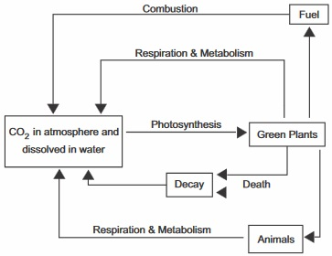
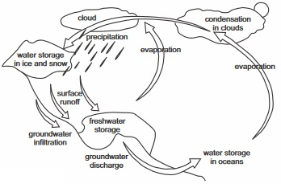
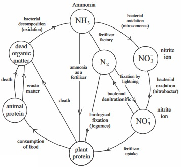

New Senior School Biology Practical Activity & Work Book Two
Chapter
6
NUTRIENT CYCLING IN NATURE
Notable Concepts
The Carbon Cycle:
Oxygen Cycle
Water Cycle*
Nitrogen Cycle:
fig6.1: Carbon cycle

fig6.2: Water cycle

fig6.3: Nitrogen cycle

Background Information
Unlike energy, the chemical nutrients in the ecological system (ecosystem) can be used over and over again (recycled). This occurs through the movement of these chemicals between the living community and the physical environment. Nutrients being recycled in an ecosystem include: carbon, oxygen, water, nitrogen and phosphorus.
THE CARBON CYCLE:
The carbon cycle shows how carbon alternates between its inorganic form carbon dioxide in the atmosphere and its various organic forms in living things.
Through the process of photosynthesis, carbon in carbon (iv) oxide (i.e. carbon dioxide) is utilized in the building of complex organic carbon molecules in bodies of plants. Animals feed on these plants and carbon forms part of their bodies. During respiration, both plants and animals give back the carbon in them back to the atmosphere as they release carbon dioxide.
Also through the process of decay of organic materials and burning process carbon in complex organic materials are released back into the atmosphere.
OXYGEN CYCLE
The atmosphere contains about 21% of oxygen by volume. Through the process of respiration, oxygen in the atmosphere is being utilized by plants and animals in breaking down food substances for energy release. Oxygen returns back to the atmosphere as a bye product of photosynthesis.
WATER CYCLE:
The atmosphere is a vast reservoir of water in form of water vapour. Water falls during rain. Rain water is utilized by plants and animals. Some of it drains into the soil; some enter the streams, rivers lakes and oceans. Water gets back into the atmosphere by respiration, transpiration, excretion, evaporation from water bodies such as streams, rivers, lakes, ponds, etc.
NITROGEN CYCLE:
The atmosphere contains up to 78% of oxygen by volume. Atmospheric oxygen is converted to organic nitrogenous compound by the process of nitrogen fixation and thunderstorm . Nitrogen fixation is carried out by nitrogen fixingmicro organism such as Azotobacter,clostridium which convert atmospheric nitrogen directly to nitrates that are utilized in building organic nitrogenous compounds’ in living things,. Rhizobiumanother bacteria (it lives in root nodules of leguminous plants) converts atmospheric nitrogen to organic nitrogenous compounds. At the death of the host plants the organic nitrogenous compounds are converted to soil nitrates. Also through the process of decay of living things, nitrogen gets to the soil as nitrates by the activities of nitrifying bacteria. Nitrogen gets back to the atmosphere from the nitrates by the activities of denitrifying bacteria in the soil.
GENERAL QUESTIONS
1. What is nutrient cycle?
2. State two importance of nutrient cycle
3. State one way by which carbon leaves the atmosphere
4. What is photosynthesis?
5. What is the inorganic form of carbon compound in the atmosphere?
6. State two organisms that convert nitrogen gas directly into a form that is biologically usable
7. Rhizobium is a
that lives in root nodules of
plants
8. Water can get back to its reservoir in the atmosphere by these four methods
10. What is nitrogen fixation?
11. Differentiate between Nitrogen fixation and nitrification
Nitrogen fixation
Nitrification
12. What is the action or role of nitrosomonas during nitrification?
Nitrosomonal converts Ammonia to Nitrates
Nitrosomonal converts Ammonia to Nitrites
Nitrosomonal converts Ammonia to Protein
13. Describe how thunder storm carries out its role in converting atmospheric nitrogen to organic nitrogenous compounds
14. State one role of decomposers during the nitrogen cycle
15. State one importance of nitrogen cycle to plants and animals
16. Write down one importance of water cycle
17. What type of feeding relationship does Rhizobium bacteria have with a leguminous plant
18. Draw the water cycle in the space provided below
19.Oxygen gas make up about 21% of the earth’s atmosphere, use your knowledge of photosynthesis, respiration and nutrient cycle to draw an oxygen cycle
PRACTICALACTIVITIES
Explain what happens after rain fall has left much heaps of stagnant water on the roads and after few days the waters are not found again
The diagram below is a root nodule of a leguminous plant
Label the part where Rhizobium lives
What type of feeding relationship does it have with the plant?
Explain how Rhizobium carries out the nitrogen fixation process in the plant